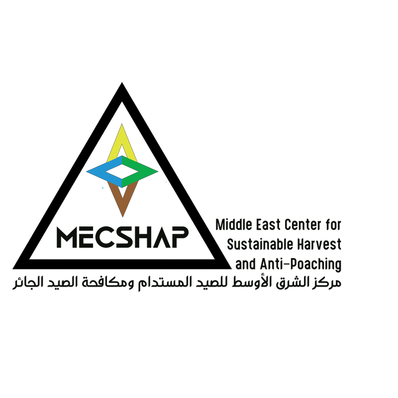
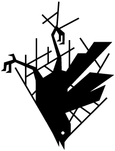
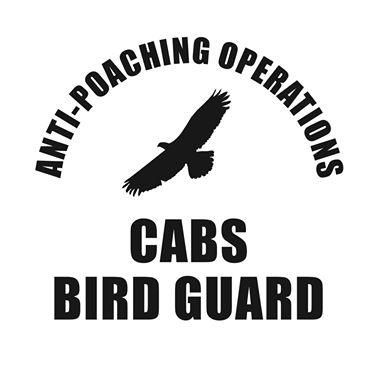

Beyrouth — Sayd
Le Comité contre le massacre des oiseaux (CABS) a annoncé le lancement de sa campagne d’automne pour protéger les oiseaux migrateurs au Liban, en coopération avec son partenaire local, le Middle East Center for Sustainable Hunting and Anti-Poaching (MECSHAP). La campagne vise en particulier à protéger les rapaces migrateurs et à lutter contre la capture aux filets et à la glu, selon son annonce du 8 septembre 2026.
Dans une déclaration à Sayd, Adonis Al-Khatib, président du Middle East Center for Sustainable Hunting and Anti-Poaching, a indiqué :
« L’unité de lutte contre le braconnage (APU) du MECSHAP se prépare, en coopération avec CABS, à mener le camp d’automne contre le braconnage au Liban. Ce partenariat de terrain se poursuit depuis 2017, après une prise de contact de CABS avec MECSHAP par l’intermédiaire de la Société pour la protection de la nature au Liban (SPNL). »
Il a ajouté : « CABS lutte contre la mise à mort illégale des oiseaux dans plusieurs pays européens. Sa coopération avec l’APU a toutefois constitué une expérience particulière : c’était la première fois que des chasseurs responsables participaient directement à ses actions contre le braconnage. Cette expérience a montré que le chasseur responsable est un véritable partenaire de la protection des oiseaux migrateurs et de la lutte contre les infractions au Liban. »

Il a poursuivi : « Pendant les camps de printemps et d’automne, notre travail consiste à surveiller et documenter les infractions liées à la glu, aux filets, à la chasse nocturne et à la mise à mort indiscriminée des oiseaux migrateurs, en coordination avec les services de sécurité, l’armée libanaise et la justice compétente. L’unité aborde le camp de cet automne avec un haut niveau de préparation, soutenue par un vaste réseau de chasseurs et de citoyens qui transmettent à l’équipe opérationnelle des signalements, des photos et des localisations précises. »
Source : annonce du Comité contre le massacre des oiseaux du 8 septembre 2026 et déclaration d’Adonis Al-Khatib à Sayd.